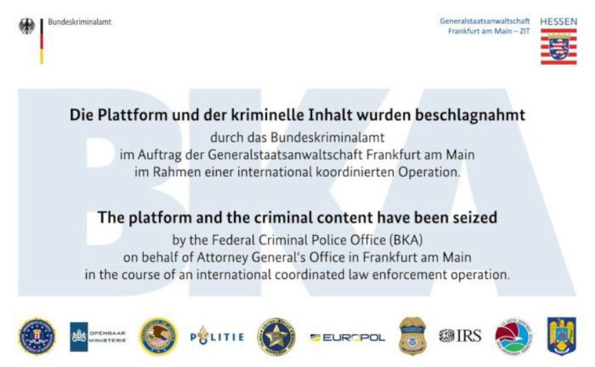
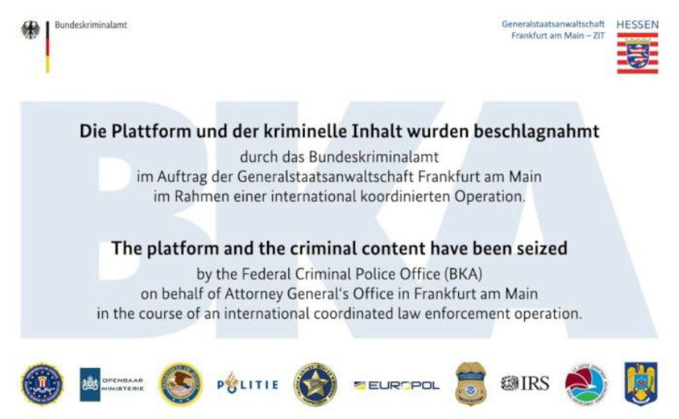

German Federal Police Announce WallStreet Market Seizure
~3 min read | Published on 2019-05-03, tagged Darkweb-Market, General-News, Seized, Website using 587 words.
The German Federal Police have announced the WallStreet takedown and arrests of three suspected marketplace operators or staff members.
Below is a translated press release from the BKA
The Attorney General Frankfurt - Central Office for the Suppression of Cybercrime (ZIT) and the Federal Criminal Police Office (BKA) have arrested a 31-year-old suspect from Bad Vilbel, a 29-year-old suspect from the district of Esslingen and a 22-year-old from Kleve on April 23 and April 24.
The German nationals are strongly suspected of having operated the illegal online marketplace “Wallstreet Market,” which is accessible exclusively via the so-called Darknet, and works in a shared way. The server infrastructure of the criminal platform was secured by officers of the Federal Criminal Police Office.
The online marketplace “Wallstreet Market” was the world’s second largest criminal trading platform, traded in particular for drugs (including cocaine, heroin, cannabis and amphetamines), spied data, fake documents and malicious software. The illegal trading platform was exclusively accessible via the TOR network in the so-called Darknet and aimed at international trade in criminal goods. Most recently, more than 63,000 sales offers were placed on the online marketplace and more than 1,150,000 customer accounts and more than 5,400 sellers registered. For payment, the users of the online marketplace used the crypto currencies Bitcoin and Monero . The alleged marketplace officials are said to have received commission payments of 2 to 6 percent of their sales value to settle illegal sales of the platform through the platform.
The arrests were preceded by elaborate covert investigations involving US and Dutch law enforcement agencies and the European police force Europol . Since March 2019, the investigations have been directed against the three German nationals, who could be identified as suspects. After the alleged persons in charge of the illegal online marketplace switched the platform into maintenance mode on April 23, 2019, they began transferring the customer’s funds deposited in the marketplace to themselves (in the scene, this procedure is referred to as an " exit scam “) ), extensive cyber operations took place in the period from 23 April to 2 May 2019 by Specialists of the Federal Criminal Police Office. As part of a search of the homes of the suspects were cash amounts of over 550,000, as well as cryptocurrencies Bitcoin and Monero in 6-digit amount, several high-quality motor vehicles and numerous other evidence, especially computers and data carriers, ensured. At the 22-year-old suspect from Kleve also a firearm was found and secured.
At the request of the Attorney General Frankfurt am Main, the detention judge at the Gießen district court ordered the detention pending trial for the commercial procurement of an opportunity for the unauthorized surrender of narcotics. The servers of the illegal online marketplace were confiscated on 2 May 2019. The following backup banner has been uploaded to the website of the marketplace:
Backup banner for the online platform “Wall Street Market” with the text “The platform and the criminal content were confiscated"Backup banner “WALL STREET MARKET”
In the US , during the investigation by the Los Angeles Procuratorate, two of the highest volume suppliers of narcotics in the illegal online marketplace " WALL STREET MARKET " were identified and arrested. While searching the homes of US suspects, a variety of illegal weapons and millions of dollars in cash can be found and secured in addition to drugs.
The Attorney General Frankfurt am Main and the Federal Criminal Police Office would like to thank the participating police authorities of the federal states and the international partners as well as Europol for their excellent cooperation.
Below is a translated press release from the BKA
The Attorney General Frankfurt - Central Office for the Suppression of Cybercrime (ZIT) and the Federal Criminal Police Office (BKA) have arrested a 31-year-old suspect from Bad Vilbel, a 29-year-old suspect from the district of Esslingen and a 22-year-old from Kleve on April 23 and April 24.
The German nationals are strongly suspected of having operated the illegal online marketplace “Wallstreet Market,” which is accessible exclusively via the so-called Darknet, and works in a shared way. The server infrastructure of the criminal platform was secured by officers of the Federal Criminal Police Office.
The online marketplace “Wallstreet Market” was the world’s second largest criminal trading platform, traded in particular for drugs (including cocaine, heroin, cannabis and amphetamines), spied data, fake documents and malicious software. The illegal trading platform was exclusively accessible via the TOR network in the so-called Darknet and aimed at international trade in criminal goods. Most recently, more than 63,000 sales offers were placed on the online marketplace and more than 1,150,000 customer accounts and more than 5,400 sellers registered. For payment, the users of the online marketplace used the crypto currencies Bitcoin and Monero . The alleged marketplace officials are said to have received commission payments of 2 to 6 percent of their sales value to settle illegal sales of the platform through the platform.
The arrests were preceded by elaborate covert investigations involving US and Dutch law enforcement agencies and the European police force Europol . Since March 2019, the investigations have been directed against the three German nationals, who could be identified as suspects. After the alleged persons in charge of the illegal online marketplace switched the platform into maintenance mode on April 23, 2019, they began transferring the customer’s funds deposited in the marketplace to themselves (in the scene, this procedure is referred to as an " exit scam “) ), extensive cyber operations took place in the period from 23 April to 2 May 2019 by Specialists of the Federal Criminal Police Office. As part of a search of the homes of the suspects were cash amounts of over 550,000, as well as cryptocurrencies Bitcoin and Monero in 6-digit amount, several high-quality motor vehicles and numerous other evidence, especially computers and data carriers, ensured. At the 22-year-old suspect from Kleve also a firearm was found and secured.
At the request of the Attorney General Frankfurt am Main, the detention judge at the Gießen district court ordered the detention pending trial for the commercial procurement of an opportunity for the unauthorized surrender of narcotics. The servers of the illegal online marketplace were confiscated on 2 May 2019. The following backup banner has been uploaded to the website of the marketplace:
Backup banner for the online platform “Wall Street Market” with the text “The platform and the criminal content were confiscated"Backup banner “WALL STREET MARKET”
In the US , during the investigation by the Los Angeles Procuratorate, two of the highest volume suppliers of narcotics in the illegal online marketplace " WALL STREET MARKET " were identified and arrested. While searching the homes of US suspects, a variety of illegal weapons and millions of dollars in cash can be found and secured in addition to drugs.
The Attorney General Frankfurt am Main and the Federal Criminal Police Office would like to thank the participating police authorities of the federal states and the international partners as well as Europol for their excellent cooperation.